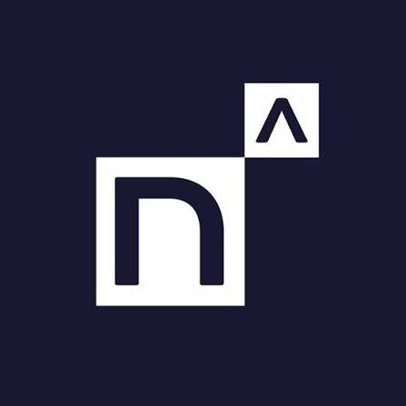

Nodo Ruta
Que la consulta de entregas no se caiga

Todo es código
Un botón para crear, otro para destruir
GitHub Actionssolo rama main
OIDCsin claves
CloudFormation4 pilas
nodo-ruta-rednodo-ruta-datosCómputo
nodo-ruta-computonodo-ruta-frontSeguridad y costos
Sin claves, sin SSH, sin sorpresas
IAM
- OIDC, sin claves guardadas
- Rol solo para este repo en main
Systems Manager
- Secretos en SSM
- Sin SSH: Session Manager
VPC
- EC2 solo acepta tráfico del ALB
- RDS sin acceso público
- Filtro por IP
Budgets
- Solo máquinas micro
- Alerta de USD 5 al mes
- Destruir al terminar
Costo
No medido. Referencia de lista: ~USD 2 al día con todo encendido, sin verificar en la facturación (docs/09).
Cierre
Tolera la caída de un servidor.
Datos que se verifican.
Tiempos medidos.
Datos que se verifican.
Tiempos medidos.
Multi-AZ para la baseHTTPS con dominioAlarmasHealth check más rápido
Gracias · Preguntas
Flechas o espacio: avanzar · O: vista general · N: notas · F: pantalla completa